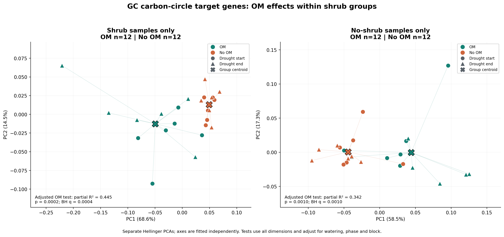
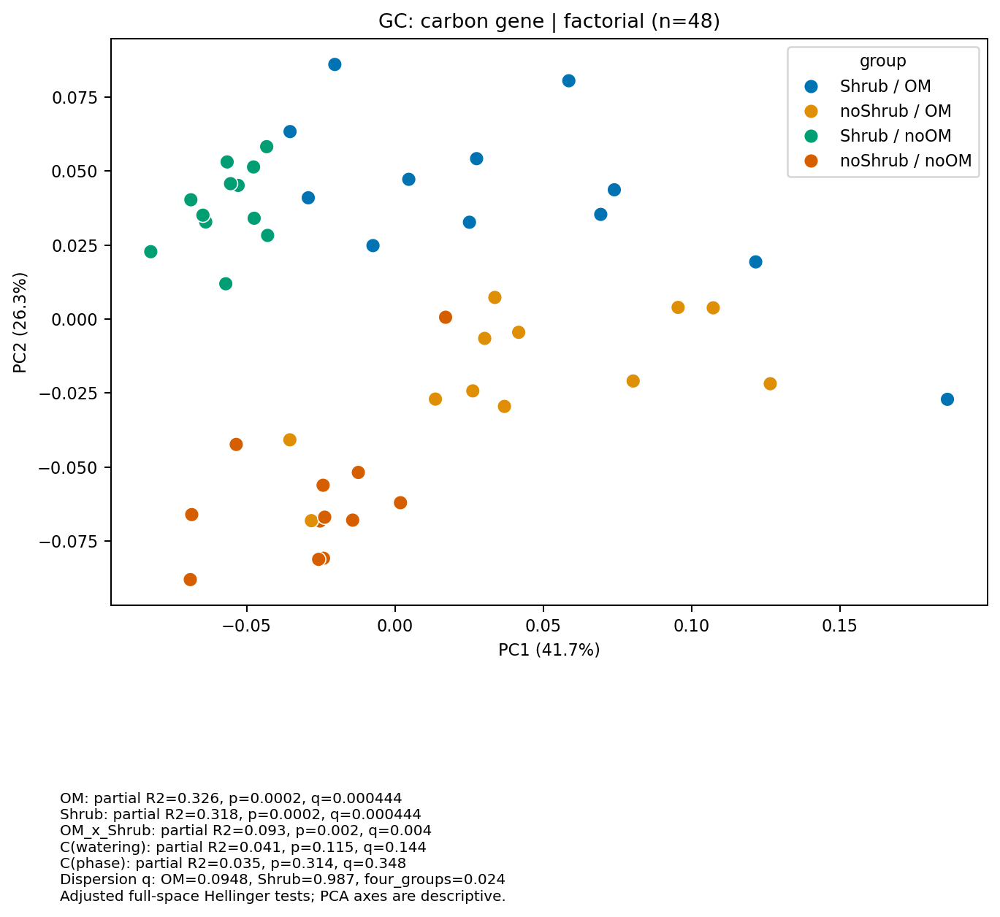
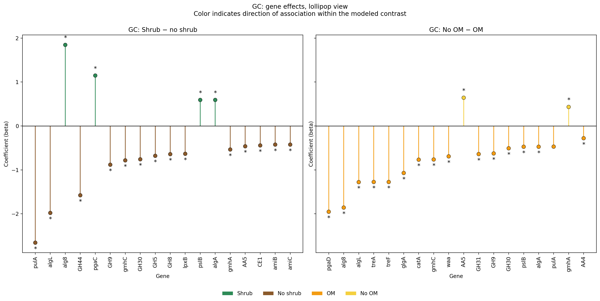
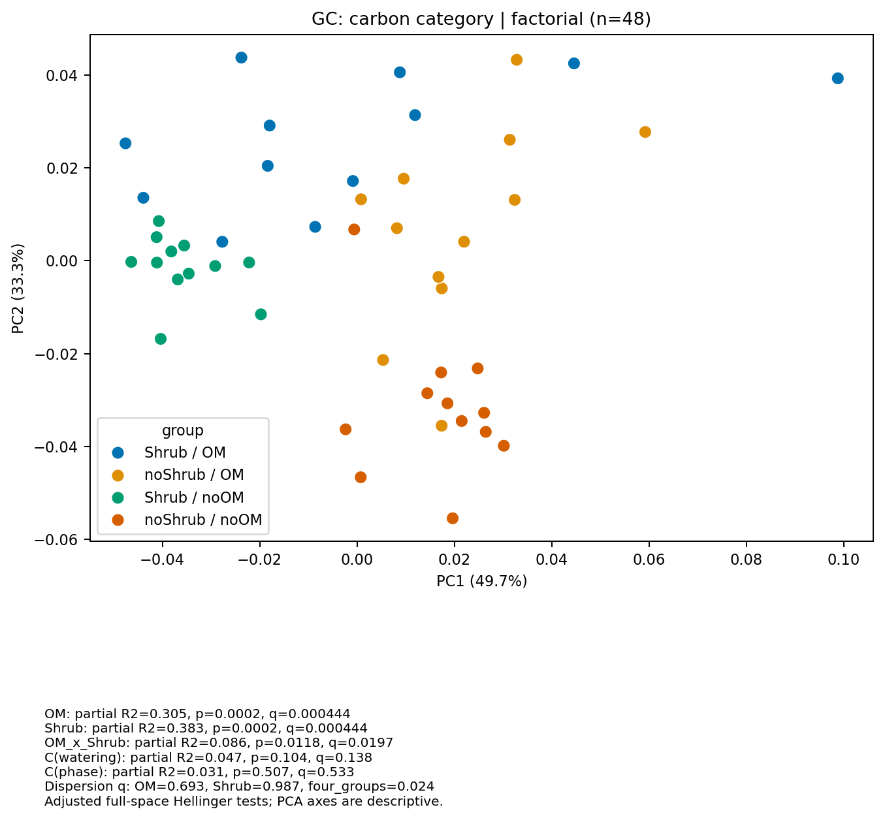
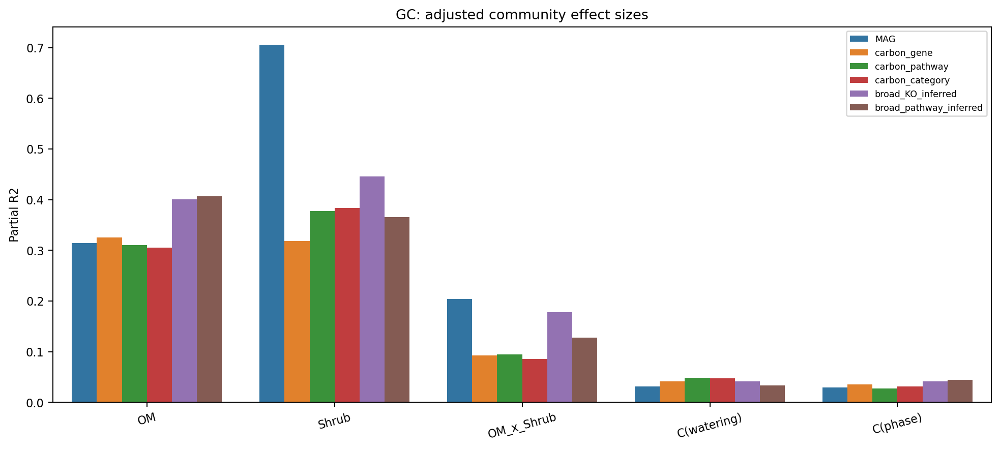

End-to-End Ownership
I can own the full cycle from input audit to validated model outputs and final reporting artifacts.
Internship-focused portfolio that demonstrates reproducible analytics, robust statistical modeling, and decision-ready reporting from complex biological datasets.
Results highlights | Scripts library | CV | Results and methods overview
I build reproducible data workflows that turn noisy, high-dimensional inputs into clear recommendations. My work combines Python engineering, statistical rigor, and communication for non-specialist stakeholders.
For industry internships, I focus on three outcomes: trustworthy analysis, transparent assumptions, and outputs that support faster, better decisions.
I can own the full cycle from input audit to validated model outputs and final reporting artifacts.
Script-first pipelines, explicit data lineage, and auditable tables reduce handoff and review friction.
Each analysis is translated into concise plots and summaries that highlight actionable signals.
Portfolio highlight
A treatment-focused ordination workflow showing how shrub-state context changes carbon-linked community patterns.
This project is a strong first stop for recruiters because it combines statistical structure, visual storytelling, and a biologically intuitive treatment narrative.


Target definitions, annotation joins, mapping-based quantification, and metadata matching checks.
Open project pageBest for: reviewers who want pipeline rigor, sample QC, and provenance checks.
Main tools: pandas, validation scripts, mapping audit outputs.

Feature-level adjusted models and multivariable community tests for gene, pathway, mechanism, and MAG levels.
Open project pageBest for: reviewers looking for statistical depth and interpretable effect sizes.
Main tools: statsmodels, robust standard errors, FDR control.
Hellinger PCA ordinations and treatment-focused interpretation-ready figures for GC and OSS.
Open project pageBest for: fast visual review of biological separation and communication quality.
Main tools: PCA ordination, figure curation, treatment-focused comparison views.

Publication-style workflow with factorial contrasts, category-level follow-up, and curated figure outputs.
Open project pageBest for: reviewers who want to see how technical outputs become a coherent narrative.
Main tools: story-specific scripts, figure selection, report framing.

Automated report generation, workbook export, and audit-ready result tables.
Open project pageBest for: reviewers focused on reproducibility, reporting discipline, and handoff readiness.
Main tools: report generation, exports, validation JSON, workbook outputs.
Scripts are grouped by project objective instead of file type. This makes it easy for internship reviewers to see the problem, method, code, and result in one place.